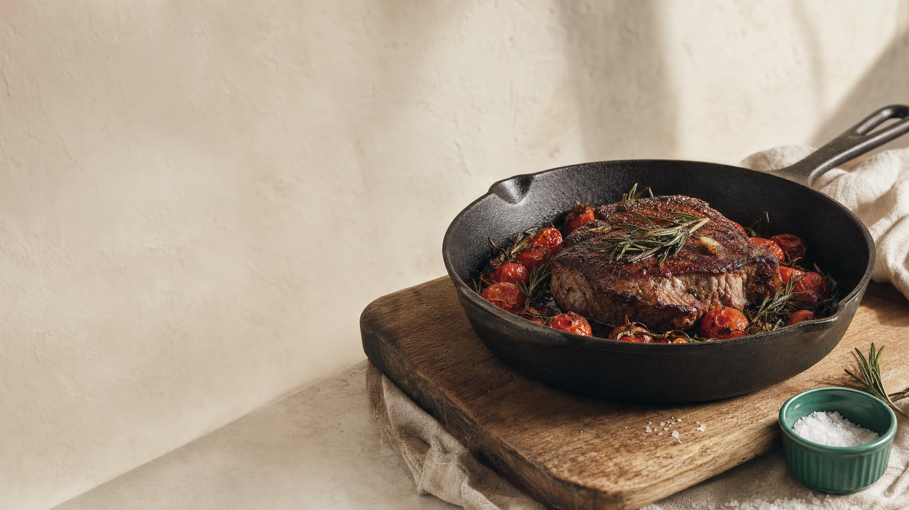
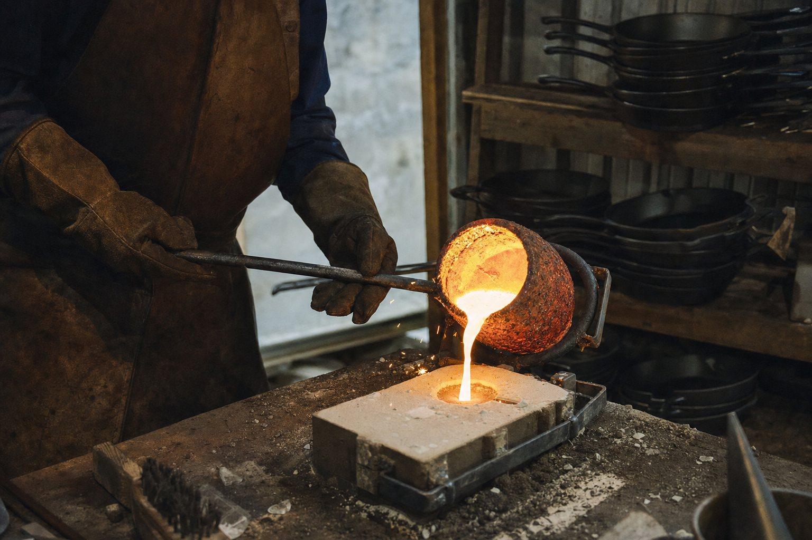

Recycled iron · Seasoned by hand · Read the foundry story
One material, done right.
We make cast-iron cookware and nothing else. Six pieces, cast from recycled iron, ground smooth, seasoned by hand with flaxseed oil, and guaranteed for as long as you own them.

- Free US shipping Ships within 2 business days
- 90-day returns Even if you've cooked in it
- Lifetime guarantee Repair or replace, free
- Free re-seasoning Forever, on every pan
The line
View all six pieces



It started with a decade of bad pans
Our founder, Dana Okafor, spent ten years buying pans that warped, arrived badly seasoned, or peeled their coating into dinner. So she started casting her own in a garage foundry. Acme Outfitters is what came out of that. We would honestly rather sell you one pan you keep for twenty years than a new one every winter.
What we stand for
- One material, done right. A narrow line means every pan gets our full attention. No filler, no seasonal gimmicks.
- Repair before replace. Rust, a rough surface, a bad season: most of it is fixable. Send it back and we make it right instead of landfilling it.
- Made to be handed down. Cast iron outlives the person who bought it. We build for the grandchild, not the quarter.
"I gave one to my daughter and kept the receipt. Turns out I didn't need it."
Home cooks who keep their tools for decades tend to like us. Read the reviews, including the critical ones. We leave those up too.
The promise, in plain terms
Free US shipping. Ships within two business days. Lifetime guarantee. Free re-seasoning forever. 90-day returns even if you've cooked in it. If you want to know how the guarantee actually works, read our guarantee, or get answers fast in the Help Center.
New to cast iron? Start with Seasoning 101 or browse the journal for cooking and care notes.